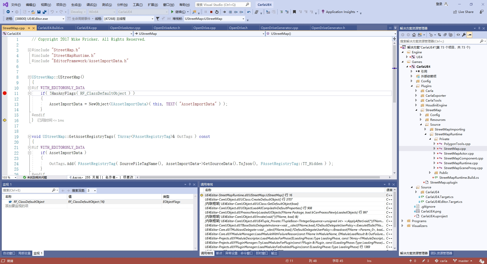
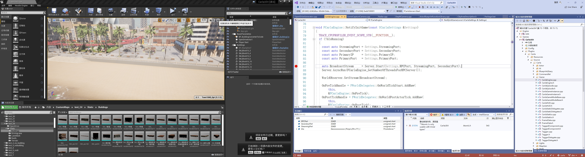
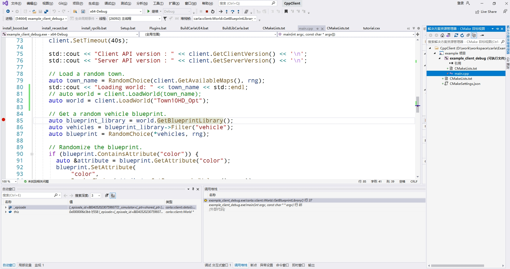
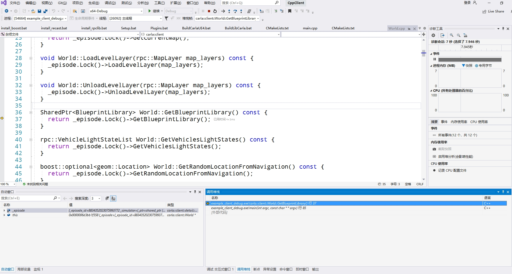
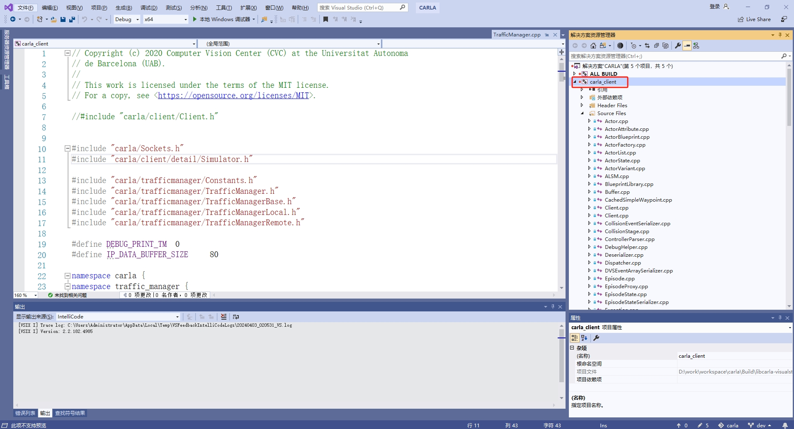

在 Windows 上进行 Carla 的调试
程序调用流程：Python、libcarla.cp37-win_amd64.pyd、LibCarla、CarlaUE4。
虚幻引擎Carla插件的调试
- 进入目录
carla/Unreal/CarlaUE4/，右键文件CarlaUE4.uproject，选择运行Generate Visual Studio project files，在当前目录中将会生成VS的工程文件，双击打开CarlaUE4.sln。

笔记
如果右键菜单中未出现Generate Visual Studio project files选项，则到虚幻引擎的目录中运双击执行engine\Engine\Binaries\Win64\UnrealVersionSelector.exe，将虚幻引擎软件注册到系统中。如果报错：
- （调试数字孪生工具）在
解决方案中展开Games->CarlaUE4，在想要查看的源代码行的最左侧单击增加断点（比如：CarlaUE4->Plugins->CarlaTools->Source->CarlaTools->Private的OpenDriveToMap.cpp的GenerateTileStandalone()），在菜单运行调试(D)->开始调试(S)，程序将在断点出暂停。通过调式(D)->窗口(W)->监视(W)->监视 1打开变量监视窗口，查看变量值是否异常。

-
调试Carla服务端：断点打在
Carla/Game/CarlaEngine.cpp的第87行，然后开始调式，在虚幻编辑器中点击运行则会在断点处停止。  -
调式 ** 虚幻编辑器启动 **：断点打在
Carla/Vehicle/VehicleSpawnPoint.h的第16行，通过vs启动调试后启动虚幻便器到75%时候会停止。 -
调试 Python 调用：断点打在
Carla/Server/CarlaServer.cpp的第 721行，然后运行manual_control.py（调用try_spawn_actor方法生成参与者）则会在断点处停止。
配置管理器包括：
-
Debug: 游戏和引擎全都可以调试，无优化，速度慢，没有Editor相关代码功能，资源需要Cook。
-
Debug Editor：游戏和引擎全部可以调试，无优化，可以使用Editor相关代码功能，资源不需要Cook，可直接启动编辑器。（用
generate_traffic.py调试会崩溃，manual_control.py可以） -
DebugGame：游戏代码可调试无优化，Editor相关代码功能不可使用，引擎不可调试，资源需要Cook。
-
DebugGame Editor：游戏代码可调试无优化，可以使用Editor相关代码功能，引擎不可调试，资源不需要Cook。
-
Development：游戏、编辑器、引擎都不可调试，Editor相关代码功能不可使用，资源需要Cook。（The global shader cache file 'D:/work/workspace/engine/Engine/GlobalshaderCache-PCD3D_M5.bin' is missing.）
-
Development Editor：游戏、编辑器、引擎都不可调试，Editor相关代码功能可使用，资源不需要Cook。（默认）
-
Shipping：发行版，极致优化，估计调试信息都没了。
-
Test：包含额外的测试代码。
C++客户端调试
- 错误 LNK2038 检测到“_ITERATOR_DEBUG_LEVEL”的不匹配项: 值“0”不匹配值“2”
- 错误 LNK2038 检测到“RuntimeLibrary”的不匹配项: 值“MD_DynamicRelease”不匹配值“MDd_DynamicDebug”
当前工程是Debug版本（0），而引用的库文件时Release版本（2）。
需要将其他的.lib文件编译为debug模式：
0.打开x64 Native Tools Command for VS 2019，并切换到目录Util/Intallers下。
1.切换到目录Util/InstallersWin，将install_boost.bat 内的b2运行参数改为variant=debug（根据Util/BuildTools/Setup.bat里的安装Boost命令改编），（或者将 install_boost_debug.bat 拷贝到Util/InstallerWin目录下），然后运行install_boost_debug.bat ：
install_boost_debug.bat --build-dir C:\buf --toolset msvc-14.2 --version 1.80.0 -j 4
会自动将boost的库和头文件安装到目录D:\buffer\boost-1.80.0-install里面。
将install_recast.bat 中的Relase改为Debug。
将-DCMAKE_CXX_FLAGS_RELASE="/MD /MP"改为多线程调试DLL-DCMAKE_CXX_FLAGS_DEBUG="/MDd /MP"，（或者将 install_recast_debug.bat 拷贝到Util/InstallerWin目录下），然后运行install_recast_debug.bat 。
install_recast_debug.bat --build-dir C:\buf --generator "Visual Studio 16 2019"
将install_rpclib.bat 中的Relase改为Debug，运行install_rpclib.bat 。
将-DCMAKE_CXX_FLAGS_RELASE="/MD /MP"改为多线程调试DLL-DCMAKE_CXX_FLAGS_DEBUG="/MDd /MP"。或者将install_rpclib_debug.bat 拷贝到Util/InstallerWin目录下），然后运行：
install_rpclib_debug.bat --build-dir C:\buf --generator "Visual Studio 16 2019"
2.将第1步生成的安装文件目录配置到Examples\CppClient\CMakeLists.txt中（即将 cpp_client_debug.txt 拷贝到Examples/CppClient目录下并重命名为CMakeLists.txt ），对应的头文件和库文件都改为Debug版本（即将C:\buf目录下的boost-1.80.0-install、recast-install、rpclib-install3个文件夹拷贝到Build\debug目录下）；
3.在main.cpp中增加断点，并开始调试；

auto world = client.LoadWorld("town_name");
改为：
auto world = client.LoadWorld("Town10HD_Opt");
即将main_debug.cpp 拷贝到Examples/CppClient目录下。
4.使用VS2019打开Examples/CppClient/CMakeLists.txt，程序在断点停止后按F10运行下一步，按F11进入LibCarla中的函数实现。

注意
需要先启动Town10HT-Opt场景：需要从vs2019中使用调试模式启动虚幻编辑器并运行场景，如果使用编译后的场景执行world.GetBlueprintLibrary()会抛出异常。如果调式报错错误 LNK1169 找到一个或多个多重定义的符号，则表明当前工程有多个主函数的代码，需要删除main.cpp或者在Cmakelist.txt中指定需要编译包含住函数的的源代码main_debug.cpp。
调试LibCarla
该功能已经在 C++客户端调试 中实现，故不再需要，后面的步骤仅做探索使用。客户端向服务端调用实现的功能。
* 脚本BuildLibCarla.bat调用cmake命令进行构建：
cmake -G %GENERATOR% %PLATFORM%^
-DCMAKE_BUILD_TYPE=Server^
-DCMAKE_CXX_FLAGS_RELEASE="/MD /MP"^
-DCMAKE_INSTALL_PREFIX="%LIBCARLA_SERVER_INSTALL_PATH:\=/%"^
"%ROOT_PATH%"
其中，-G表示指定编译器版本（set GENERATOR="Visual Studio 16 2019"、set PLATFORM=-A x64）；
-DCMAKE_BUILD_TYPE的可选项包括：Client, Server, Pytorch, ros2；
-D CMAKE_BUILD_TYPE="Debug"可选值包括：Debug, Release, RelWithDebInfo, MinSizeRel。
CMAKE_CXX_FLAGS_RELEASE设置编译类型 Release 时的编译选项；
- 调用以下命令在
Build目录下生成Makefile文件：
cmake --build . --config Release --target install | findstr /V "Up-to-date:"
-
使用VS打开
Build\libcarla-visualstudio\CARLA.sln。使用命令make client打开的就是LibCarla\cmake\client\CMakeLists.txt对应的项目。（使用make server打开的则是LibCarla\cmake\server\CMakeLists.txt对应的项目）  （Build目录下还包括osm2odr-visualstudio/SUMO.sln的VS工程）。 -
右键
carla_client_debug将其设为启动项目。 -
附着到 Python 程序启动调试后，出现
当前不会命中断点 还没有为该文档加载任何符号的警告。解决
在BuildLibCarla.bat中，将 --config参数从Release修改为Debug。
注意
在vs2019中生成carla_client_debug的解决方案时出现fatal error C1189: #error : "Incompatible build options"错误，因为 在不指定调试运行时的情况下使用/RTC选项将导致链接器错误 ，则需要将“项目属性 --> C++ --> 基本运行时检查” 改为 默认值，然后重新生成解决方案。或者右键carla_client_debug项目进行生成。
注意
右键carla_client_debug，选择调试->启动新实例。 且需要在同一个解决方案中新建Python项目用于测试。
参考 vs调试C++ 。
调试carla_client时，vs报错：boost::python::error_already_set，尝试捕获具体异常 。
Python 扩展模块
LibCarla编译后生成Python37/Lib/site-packages/carla/libcarla.cp37-win_amd64.pyd给Python进行调用。为了提高运行速度，将当前目录中的__init__.py和command.py编译为__pycache__目录中的 byte code(字节码)。
调试PythonAPI
boost_python库所在的目录为：carla\Build\boost-1.80.0-install\lib\libboost_python37-vc142-mt-x64-1_80.lib，mt-x64之间带有gd的是对应的调试版本。示例参考 链接 。
列出所有可用的命令：
python setup.py --help-commands
构建命令：
python setup.py build
构建调试版本
- 右键
CARLA解决方案，添加->新建项目->Python应用程序； - 将
manual_control.py文件内容复制到新建工程的PythonApplication.py文件中； - 在.py文件的开始处增加
input()代码； - 右键.py文件，点击
开始执行（调试），会弹出命令行界面； - 右键
carla_client_debug项目->调试->启动新实例； - 在第4步弹出的命令行界面中敲回车；
参考链接 ，效果未知。
其他
检查所依赖dll库的符号是否加载
下断点，F5调试。然后“调试 - 窗口 - 模块”打开模块窗口。
VS2019 打开 CarlaUE4 的 Cmake 工程
windows操作系统下通过vs2019打开并编译carla：
- 开Carla的CMake项目（参考CMake 入门教程 ）：
从 VS 的菜单中选择 File-->Open-->CMake, 在对话框中找到 Carla 所在的本地文件夹（包含CMakeLists），选择CMakeLists.txt文件，打开，Visual studio 会自动加载此仓库，解析 CMakeLists.txt 文件，并提取其配置和变量信息。解析完成（需要等会儿或者重启）会从解决方案资源管理器中看到.cpp文件。
- 修改配置：
点击x64-Debug下拉菜单中的管理配置，并在弹出的界面点击编辑JSON（该过程在工程根目录下生成CMakeSettings.json），将所需要构建的类型改为想编译的类型，比如Client。
- 生成：
点击菜单栏生成-全部生成或部分生成即可。
导入崩溃问题
- 例如，导入测试链接：
小地图：
https://overpass-api.de/api/map?bbox=112.9088,28.2221,112.9172,28.2290
大地图：
https://overpass-api.de/api/map?bbox=112.8553,28.1931,112.9396,28.2504
金醴高速：
https://overpass-api.de/api/map?bbox=113.5293,27.6893,113.5516,27.7074
CarlaUE4->Plugins->CarlaTools->Source->CarlaTools->Private的OpenDriveToMap.cpp463行GenerateTileStandalone()，然后调用ExecuteTileCommandlet():
UCommandlet是 Unreal Engine 中用于实现命令行操作的基类。它允许开发者创建自定义的命令行命令，并在引擎启动时执行这些命令。这个类主要用于扩展引擎功能，提供自定义的命令行工具。
- ExecuteTileCommandlet() 调用的是
carla\Unreal\CarlaUE4\Plugins\CarlaTools\Intermediate\Build\Win64\UE4Editor\Inc\CarlaTools\OpenDriveToMap.gen.cpp（反射文件gen）194行的
static FName NAME_UOpenDriveToMap_ExecuteTileCommandlet = FName(TEXT("ExecuteTileCommandlet"));
void UOpenDriveToMap::ExecuteTileCommandlet()
{
ProcessEvent(FindFunctionChecked(NAME_UOpenDriveToMap_ExecuteTileCommandlet),NULL);
}
- 找到名为“ExecuteTileCommandlet”的
UFunction对象； - 执行“ProcessEvent”函数，然后从全局函数映射表找到对应的函数指针执行（利用函数名调用UFUNCTION函数）。
蓝图的字节码 ：在engine\Engine\Source\Runtime\CoreUObject\Public\UObject\Script.h这个文件中有一个enum EExprToken，这个枚举就是蓝图的字节码定义。引擎中使用一个全局查找表，把上述字节码映射到函数指针。在运行时，从一个字节码数组中逐个取出字节码，并查找函数指针，进行调用，也就完成了所谓的“字节码解释执行”的过程。
改为
void UOpenDriveToMap::GenerateTileStandalone(){
UE_LOG(LogCarlaToolsMapGenerator, Log, TEXT("UOpenDriveToMap::GenerateTileStandalone Function called"));
// ExecuteTileCommandlet();
GenerateTile();
UEditorLoadingAndSavingUtils::SaveDirtyPackages(true, true);
UEditorLevelLibrary::SaveCurrentLevel();
}
注意：大地图也只能生成一小片地图。
报错信息：
D:\work\workspace\engine/Engine/Binanes\Win64\UE4Editor ../../../../carla/Unreal/CaraUE4/CaraUE4.uproject -run=GenerateTileCommandlet " " -FilePath= ../../../../carla/Unreal/CarlaUE4/Content/Custo
[2024.04.30-06.58.10:090][ 0]LogInit: Executing Class /Script/CarlaTools.GenerateTileCommandlet
[2024.04.30-06.58.10:090][ 0]LogOutputDevice: Warning:
(0 frames)
崩溃日志：
LoginId:bc22576a452b36c1831fe8942b55e57a
EpicAccountId:77cf3795af004e58a037e9c9d4a5aa0d
Assertion failed: Pair != nullptr [File:D:\work\workspace\engine\Engine\Source\Runtime\Core\Public\Containers/Map.h] [Line: 621]
UE4Editor_Core!AssertFailedImplV() [D:\work\workspace\engine\Engine\Source\Runtime\Core\Private\Misc\AssertionMacros.cpp:104]
UE4Editor_Core!FDebug::CheckVerifyFailedImpl() [D:\work\workspace\engine\Engine\Source\Runtime\Core\Private\Misc\AssertionMacros.cpp:461]
UE4Editor_CarlaTools!UGenerateTileCommandlet::Main() [D:\work\workspace\carla\Unreal\CarlaUE4\Plugins\CarlaTools\Source\CarlaTools\Private\Commandlet\GenerateTileCommandlet.cpp:75]
UE4Editor!FEngineLoop::PreInitPostStartupScreen() [D:\work\workspace\engine\Engine\Source\Runtime\Launch\Private\LaunchEngineLoop.cpp:3369]
UE4Editor!GuardedMain() [D:\work\workspace\engine\Engine\Source\Runtime\Launch\Private\Launch.cpp:127]
UE4Editor!GuardedMainWrapper() [D:\work\workspace\engine\Engine\Source\Runtime\Launch\Private\Windows\LaunchWindows.cpp:137]
UE4Editor!WinMain() [D:\work\workspace\engine\Engine\Source\Runtime\Launch\Private\Windows\LaunchWindows.cpp:268]
UE4Editor!__scrt_common_main_seh() [d:\agent\_work\2\s\src\vctools\crt\vcstartup\src\startup\exe_common.inl:288]
kernel32
ntdll
可知：OpenDriveMap->FilePath = ParamsMap["FilePath"];报的错，应该是路径下.xodr文件不存在。
崩溃日志位于：engine\Engine\Binaries\Win64\CommandletParameters.txt
找到的命令行运行参数为：
-run=GenerateTileCommandlet " " - F i l e P a t h = . . / . . / . . / . . / c a r l a / U n r e a l / C a r l a U E 4 / C o n t e n t / C u s t o m M a p s / t e s t _ 3 7 / O p e n D r i v e / t e s t _ 3 7 . x o d r " " - B a s e L e v e l N a m e = / G a m e / C u s t o m M a p s / t e s t _ 3 7 / t e s t _ 3 7 " " - G e o C o o r d s X = 2 7 . 6 8 9 3 0 1 " " - G e o C o o r d s Y = 1 1 3 . 5 2 9 2 9 7 " " - C T i l e X = 4 " " - C T i l e Y = 0 " " - A l l o w C o m m a n d l e t R e n d e r i n g
参数多了很多空格
正确应该为：
D:\work\workspace\engine\Engine\Binaries\Win64\UE4Editor ../../../../carla/Unreal/CarlaUE4/CarlaUE4.uproject -run=GenerateTileCommandlet -FilePath=../../../../carla/Unreal/CarlaUE4/Content/CustomMaps/test_37/OpenDrive/test_37.xodr -BaseLevelName=/Game/CustomMaps/test_37/test_37 -GeoCoordsX=27.689301 -GeoCoordsY=113.529297 -CTileX=4 -CTileY=0 -AllowCommandletRendering
D:\work\workspace\engine\Engine\Binaries\Win64\UE4Editor-Cmd D:/work/workspace/carla/Unreal/CarlaUE4/CarlaUE4.uproject -run=GenerateTileCommandlet -FilePath=D:/work/workspace/carla/Unreal/CarlaUE4/Content/CustomMaps/test_37/OpenDrive/test_37.xodr -BaseLevelName=/Game/CustomMaps/test_37/test_37 -GeoCoordsX=27.689301 -GeoCoordsY=113.529297 -CTileX=4 -CTileY=0 -AllowCommandletRendering
直接命令行运行报错（必须确保不是Commandlet启动，而必须是Editor启动）：
LogWindows: Error: Assertion failed: !IsRunningCommandlet() [File:D:/work/workspace/engine/Engine/Plugins/Developer/RenderDocPlugin/Source/RenderDocPlugin/Private/SRenderDocPluginEditorExtension.cpp] [Line: 107]
问题的根源：Windows不支持使用Commandlet方式，而是可以直接调用GenerateTile();生成地图瓦片。
解决办法：使用最新的 ue4-dev 分支代码，对应的 代码修改 、空指针问题 。使用 RemoveFromRoot() 将其从根对象列表中移除。这允许垃圾回收机制回收该对象所占用的内存。
VS 调试 UE 项目
- 变量已被优化掉，因而不可用。
VS菜单中选择DebugGammingEditor，然后开始调试，就可以添加要监视的项。
问题
崩溃于engine\Engine\Source\Runtime\CoreUObject\Private\UObject\ScriptCore.cpp1990行Function->Invoke(this, NewStack, ReturnValueAddress);
弹出报错信息框：
Failed to open descriptor file ./../../../carla/Unreal/CarlaUE4/CarlaUE4.uproject
-
在VS中点击调试或运行时报错：
错误 C4067 预处理器指令后有意外标记 - 应输入换行符和错误 C1012 括号不匹配: 缺少“)”
解决：在命令行使用make launch ARGS='--chrono'进行重新编译后，然后再用VS启动调试。
- 执行
make launch或者在vs中启动调试时报错：无法打开源文件 "Renderer/Public/GBufferView.h"
表现为打开CarlaUE4.sln后没有 UnrealBuildTool选项。
因为未在所使用的虚幻引擎代码库（STOCK UNREAL ENGINE）中找到它，可能本地存在多个虚幻引擎的版本。GBuffer 它是添加到 CARLA 分支中的内容。如果您在两个版本的 Unreal 和 Carla 之间执行 git diff，您将看到只有少量更改，并且添加了 GBuffer 视图。
解决：右键文件CarlaUE4.uproject，选择Switch Unreal Engine version，并选择需要使用的虚幻引擎版本（如果没有生成新的CarlaUE4.sln，则需要先删除再重新生成CarlaUE4.sln）。还有可能报错：预处理器指令后有意外标记 - 应输入换行符，需要在命令行中先运行make launch或者make launch ARGS="--chrono"然后再在vs中运行。
- 服务端帧率过低，十多帧，正常有40帧左右
可能是因为编译的时候链接到了libcarla库的调式版本。
依赖
boost-1.80.0
发布
包含所有软件依赖，双击launch.bat启动软件。
VS2019社区版安装
解压安装包：
7z x filename.zip -o.
新电脑运行NativeDesktop.exe出现此版本的Windows不支持此产品，请尝试升级Windows。
技巧
- 进行函数跳转时，vs一致出现
正在进行IntelliSense：
选择“工具”菜单栏下的“选项”按钮打开选项页面，找到 文本编辑器->C/C++->高级,在右侧的禁用IntelliSense中改为True
启动调式并在断点停下，然后“调试 - 窗口 - 模块”打开模块窗口。 找到第三方dll的名字，看“符号文件”一栏是空的。说明这个dll的符号文件没有加载。 把.pdb和.dll放在一起。再次调试。可以看到符号文件已经加载了。
- 改变ubuntu终端显示语言（桌面系统中文，终端提示英文）
vim ~/.bashrc
export LANGUAGE=en_US
export LANG=en_US.UTF-8
source ~/.bashrc
- 日志记录
UE_LOG函数记录的日志位于carla\Unreal\CarlaUE4\Saved\Logs\CarlaUE4.log文件中。
工具
VScode调试shell bash脚本
在VScode中安装Bash Debug，
VScode远程连接时报错：Bad owner or permissions
PythonAPI说明
PythonAPI/carla/setup.py中的 ext_modules 参数用于构建 C 和 C++ 扩展扩展包。其是 Extension 实例的列表，每一个 Extension 实例描述了一个独立的扩展模块，扩展模块可以设置扩展包名，头文件、源文件、链接库及其路径、宏定义和编辑参数等。
package_dir 选项的值是字典而不是列表。当您的源代码不直接位于与 setup.py 相同的文件夹中时，请使用此选项。
测试
自动化测试请参考 链接 。